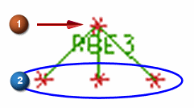

使用 RBE2和 RBE3单元
在 NX Nastran 中，RBE2与 RBE3单元通常被用作蜘蛛单元。
RBE2单元
单个核心节点(独立)的活动自由度强制分支节点(依附)的活动自由度。因此，RBE2 单元中包含的所有节点的活动自由度被认为是刚性连接的。

(1) 独立节点 (2) 依附节点
RBE3单元
分支节点（独立）的活动自由度的加权平均值强制单个核心节点（依附）的活动自由度。加权设置为 1，且不能在 NX 中更改；所有节点都平等地参与运动。与 RBE2 不同的是，由于分支节点允许的自由度，RBE3 单元是柔性的（不是无限刚性）。此单元类型的常见用法包括添加和分布质量而不添加刚度，以及将载荷从多个点分布到单个点。

(1) 依附节点 (2) 独立节点